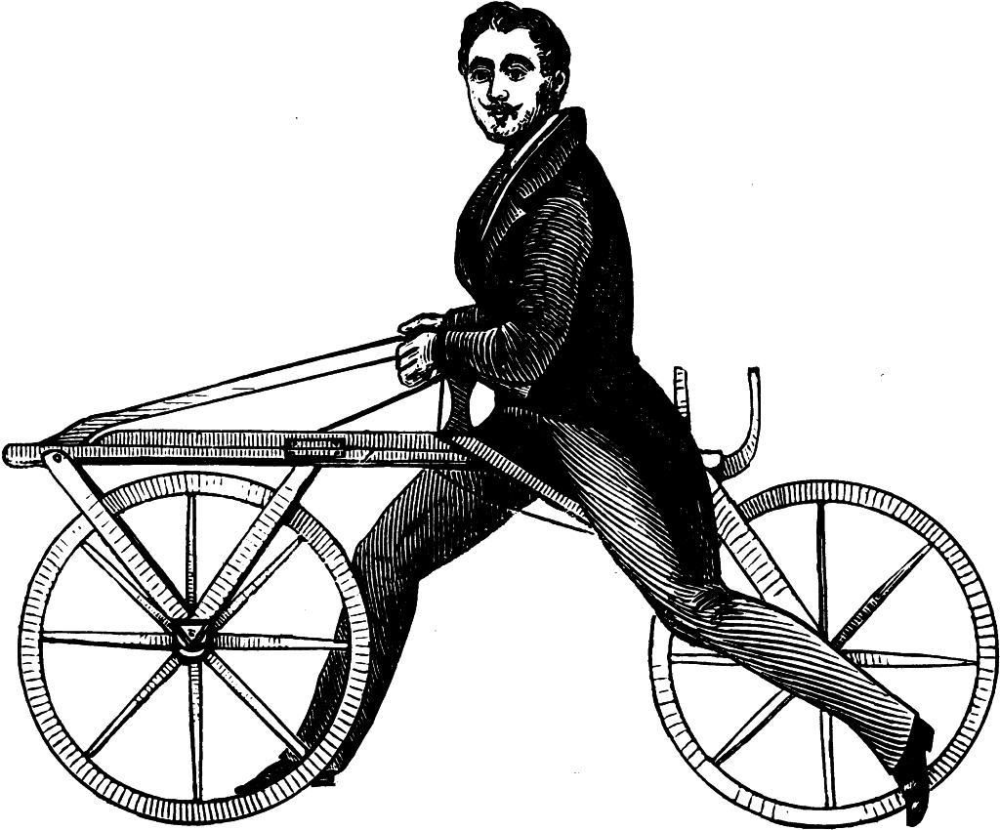
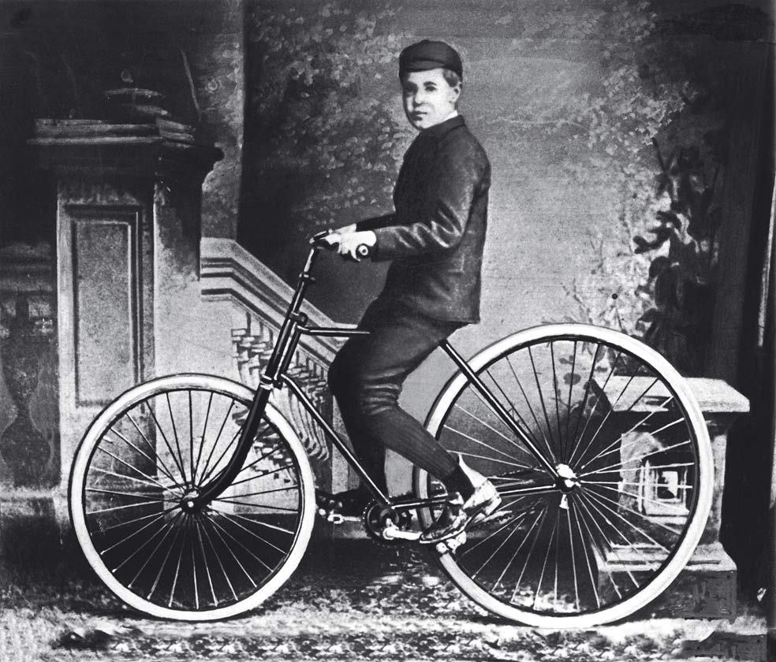

Apareció en Francia a finales del siglo XVIII, pero no fue bien recibida por la sociedad. Era bastante rígida y tenía que ser impulsada por los pies. Eso hacía que fuera difícil de manejar y nadie quisiera intentarlo. No era conocida como bicicleta, sino como “velocípedo“.
Más tarde en 1817, un alemán llamado Karl Drais mejoró el diseño del velocípedo al modificar el soporte de las ruedas, haciendo que estas se movieran de manera independiente. Esto aumentó la popularidad del velocípedo, o “sacudehuesos” como se le conocía coloquialmente, y cada vez más gente se atrevía a manejarlo. Sin embargo, su diseño no terminaba de convencer a todos y continuó teniendo modificaciones.
La siguiente transformación del velocípedo ocurrió en 1861 cuando Pierre Michaux añadió unos pedales a la rueda delantera, haciendo que fuera más fácil de manejar. Esto fue un alivio para todos, ya que las personas no tenían que seguir empujando con los pies. Aunque algunos dicen que fue un escocés llamado Kirkpatrick MacMillan en 1839 quien añadió los pedales, lo cierto es que hicieron una gran diferencia en el manejo de la bicicleta. Es a partir de ese momento cuando se le comienza a denominar “biciclo”.
En los años siguientes aparecieron dos sujetos que modificaron el biciclo para hacerlo más seguro y fácil de manejar, dando así paso a la bicicleta moderna. John Kemp Starley añadió la cadena de transmisión en 1885 facilitando el control del biciclo. Tres años después, John Boyd Dunlop añadió los neumáticos de caucho y la bicicleta pasó a ser un medio de transporte eficaz, seguro e innovador. Ahora que ya sabes cómo surgió la bici, te voy a contar toda la historia del ciclismo desde el principio.
